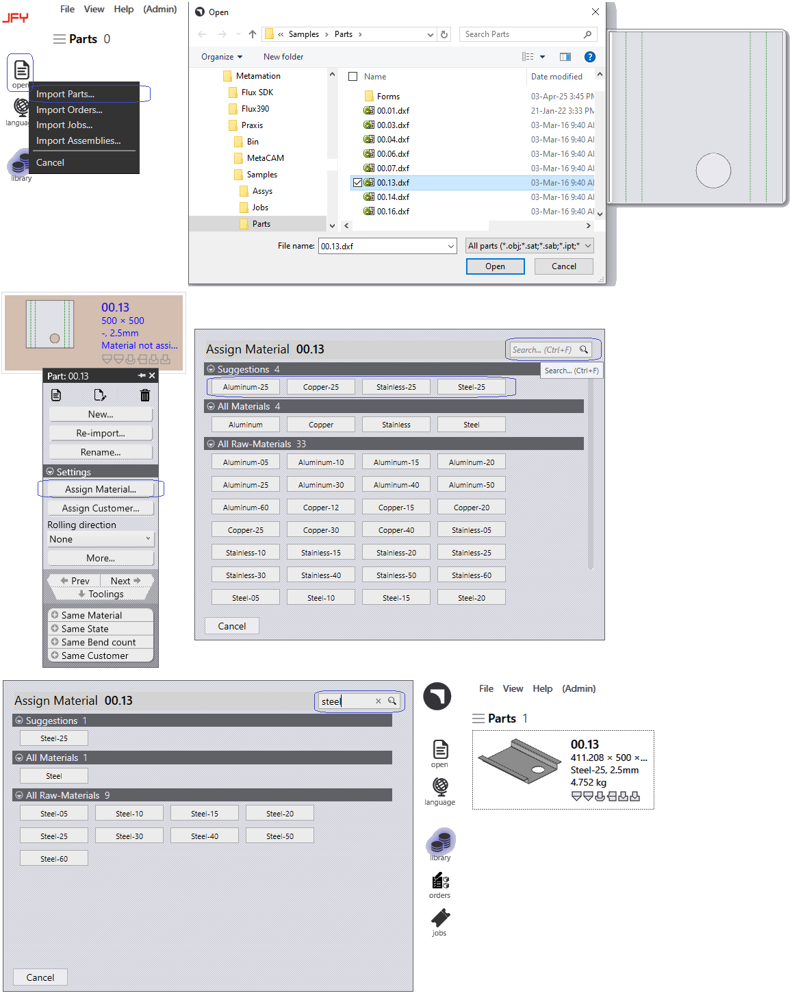
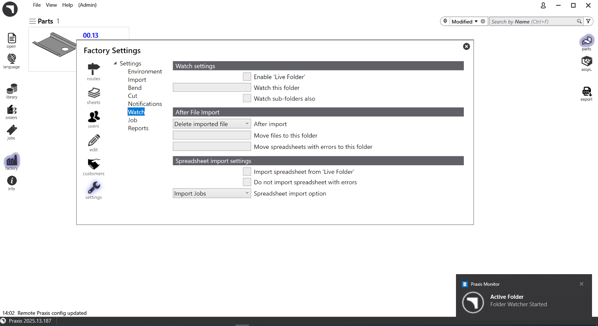

Metodi di importazione dei pezzi
Passaggio 1: file > Open > Import parts…
-
Fare clic su Open e selezionare Import parts…. Viene visualizzata la finestra di dialogo Open; selezionare qualsiasi file CAD. Viene visualizzata un’anteprima del CAD, 2D e 3D a seconda del caso.
-
Selezionare un pezzo e fare clic su Open. Il campo Materiale e Spessore non è mappato, quindi errore "Materiale mancante" o "Materiale non assegnato" emesso [Materiale mancante: aggiungere il rispettivo materiale, spessore e lamiera nella JFY Plus banca dati].
-
Materiale non assegnato: fare clic con il tasto destro del mouse sul pezzo e fare clic su Assign Material. Viene visualizzata la finestra Assegna materiale.
-
Digitare "Acciaio" nel testo Search di Assegna materiale. Vengono elencati tutti i materiali correlati all’acciaio. Selezionare Acciaio-25 dall’elenco dei materiali grezzi.
-
Il pezzo è assegnato come materiale grezzo Acciaio-25. Ora i pezzi sono auto-attrezzati rispetto a tutte le macchine e lo stato di attrezzaggio viene aggiornato.

Passaggio 2: trascinare e rilasciare
-
Trascinare e rilasciare un pezzo direttamente nella libreria pezzi JFY Plus. Ripetere quanto sopra per l’assegnazione del materiale.
Passaggio 3: cartella Watch
-
factory → settings → Watch : segno di spunta Enable 'Live Folder'. Indicare il percorso cartella Watch.
-
Aggiungere il segno di spunta "Watch sub-folders also", cartella Watch, i file spostati sono all’interno delle cartelle.
-
Dopo l’importazione: controllare l’azione della cartella Watch dopo l’importazione per cancellare il file importato o spostarlo. Se è selezionato Sposta file importato, specificare una posizione della cartella per Sposta file in questa cartella.
-
L’aggiornamento delle impostazioni Watch in Fabbrica fa sì che il centro notifiche di Windows mostri il messaggio <Cartella Watch iniziata> per la cartella attiva.
